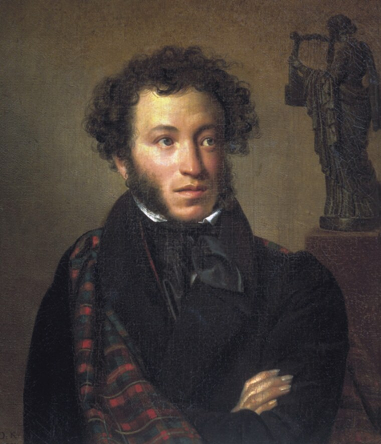

Жизнь и творчество: 12 слайдов, репродукции Кипренского, Репина, Ге и Брюллова, анимации и заметки для выступающего.
Прямая ссылка на скачивание PPTX
В презентации: ← → или пробел — листать · F — на весь экран · свайп на телефоне